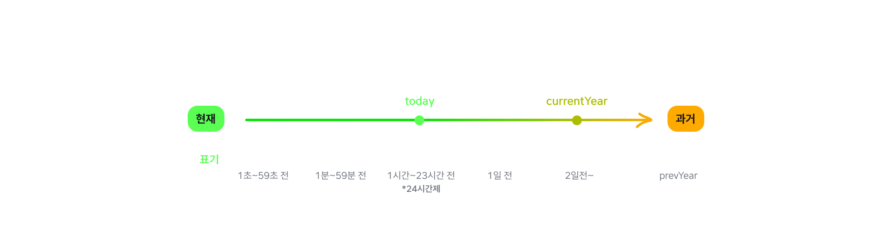
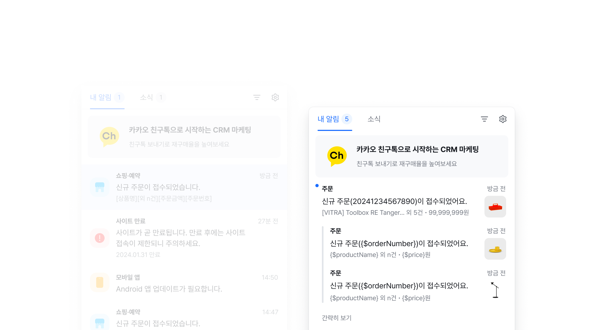
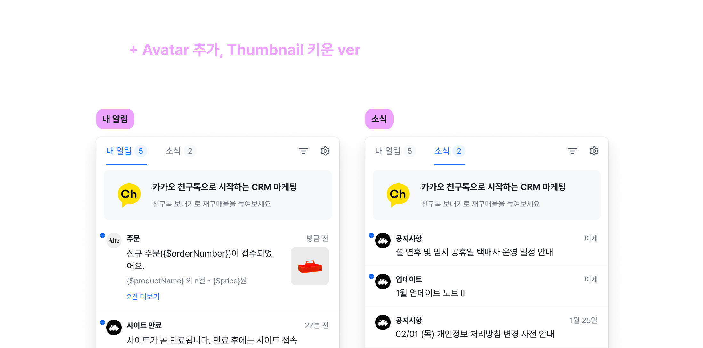
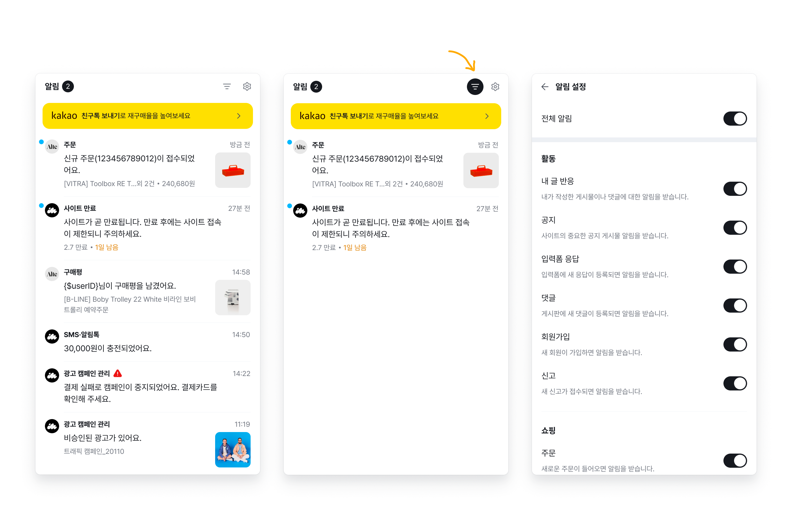
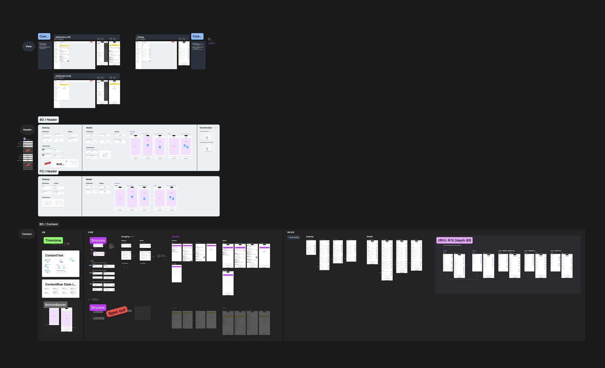
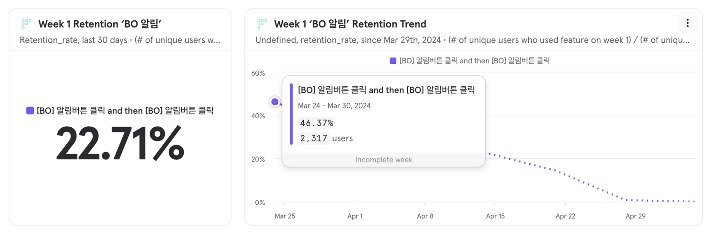

BO Notification Center MVP

Overview 개요
알림센터는 비용을 들이지 않고도 고객들에게 다양한 정보를 제공해 효과적으로 메시지를 전달할 수 있는 기능을 제공합니다. 이 프로젝트를 통해 고객들에게 더 나은 경험을 제공하고, 비즈니스 운영에 필요한 실시간 정보를 효과적으로 관리할 수 있습니다. MVP에서는 기존의 분산 되어있는 알림들을 통합하고, 점차적으로 고객 세그먼트에 맞는 알림과 제안 등 고도화된 기능이 추가될 예정으로 이를 통해 고객들은 보다 맞춤화된 알림 서비스를 제공받을 수 있을 것으로 기대하고 있습니다.
Collaborators 협업
Platform designer(1), Product owner(1), Front-end engineer(1), Back-end engineer(1)
Goals 목표
시각적 요소를 일관성 있게 유지해 사용자가 쉽게 인지하고 사용할 수 있도록 합니다. 다양한 디바이스나 화면 크기에 따라 인터페이스를 유연하게 설계해 어디서든 편리하게 알림을 확인할 수 있도록 합니다. 목표 지표로는 출시 후 1개월 내 알림 오픈율 20% 이상을 달성하는 것입니다. (일반적인 B2C 모바일 푸시 알림 오픈율은 1~3% 수준)
Role & Process 역할 및 프로세스
Product Designer : 100% 기여
해당 스쿼드 디자이너 부재로 제품 출시가 지연되고 디자인 문제가 해결되지 않는 등 위태로운 상태였습니다. 비즈니스 로드맵에 기여할 수 있는 역할을 제안 받았고, 알림은 사용자 경험에 중요한 기능이라는 것을 알고 있기 때문에 참여하게 되었습니다. PO와 함께 MVP 범위와 메시지의 규격과 타입을 정의했습니다. 또한 제품의 시각적 스타일을 만들고 개발하는 데 주요한 역할을 했으며 목표한 일정 안에 배포될 수 있도록 엔지니어와 긴밀하게 협업 하였습니다. 디자인 시스템 Clay는 제품 개발 속도에 큰 영향을 미쳤고, 출시일을 단축할 수 있었습니다.
Information Architecture 정보구조
MVP 버전에서는 기능을 최소화하여 빠르게 개발하고 배포하기 위해 필수적인 기능에 중점을 두었습니다. 알림 타입은 시스템 알림과 사용자 활동 알림으로 기본적인 알림 카테고리를 구성하고, 특정 종류의 알림을 받을지 여부를 설정할 수 있는 단순한 개인화 설정 기능을 제공합니다.

Design Highlight 디자인 하이라이트
상황에 따라 적절한 시간 표현 방식을 제공합니다. 방금 전 또는 어제와같이 상대적인 표현은 시간에 대한 구체적인 계산이나 추측을 하지 않아도 되므로 빠르게 알림을 읽고 처리할 수 있어 사용자 경험을 간소화 시켜줍니다. 2일 전 알림 부터는 구체적인 날짜를 표기해 과거의 알림을 찾거나 확인할 때 유용하도록 설계 했습니다.
또한 랜덤으로 노출되는 프로모션 배너를 통해 새로운 이벤트나 정보 등의 인사이트를 제공했고, 넛지에 대한 관심과 참여 및 활동을 유도할 수 있었습니다.

Design Results
The First Iteration 첫 번째 디자인
시각적 스타일 개발을 위해 여러 차례에 걸쳐 디자인을 변경을 반복 했습니다. 일러스트 아이콘으로 알림 타입을 구분할 수 있는 방법을 고민했고, 읽지 않은 알림을 쉽게 식별할 수 있도록 기본적인 시각적 디자인 요소를 활용했습니다.

Design Results
The Second Iteration 두번째 디자인
파비콘 이미지와 imweb 심볼로 사용자 활동 알림과 시스템 알림을 구분해 시각적 표현력을 높였습니다. 썸네일 이미지는 사용자가 상품을 빠르게 시각화 해 주문 처리 시간을 단축하는 데 도움이 됩니다.

Design Results
The Final Iteration 최종 디자인
최신 버전의 컬러 시스템이 적용된 디자인으로 MVP 배포 일정에 맞춰 일부 기능은 스펙아웃 되었습니다. 알림은 기본 최신순으로 정렬되며, 필요에 따라 읽음 또는 안 읽음 상태로 필터링 할 수 있습니다.


Results and
Achievements 결과 및 성과
우리는 예정대로 MVP를 성공적으로 출시했고, 1개월 내 알림 오픈율은 22.71%를 달성했습니다. 높은 오픈율은 사용자들이 알림 센터를 활발하게 이용하고 있다는 것을 시사하며, 우리 서비스가 사용자들의 요구를 충족시키고 유용한 정보를 제공하고 있는 것으로 해석될 수 있습니다. 나아가 우리의 제품과 서비스에 대한 성장과 발전에도 긍정적인 영향을 미칠 것으로 기대됩니다.
